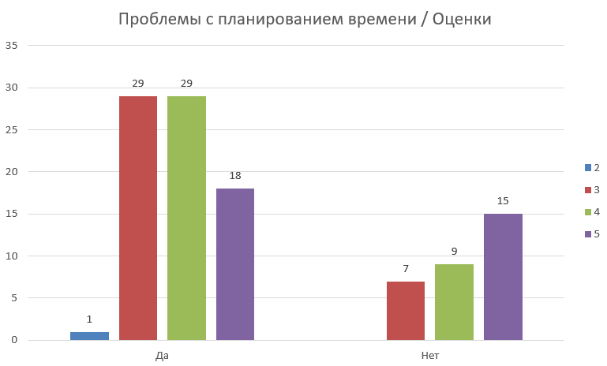
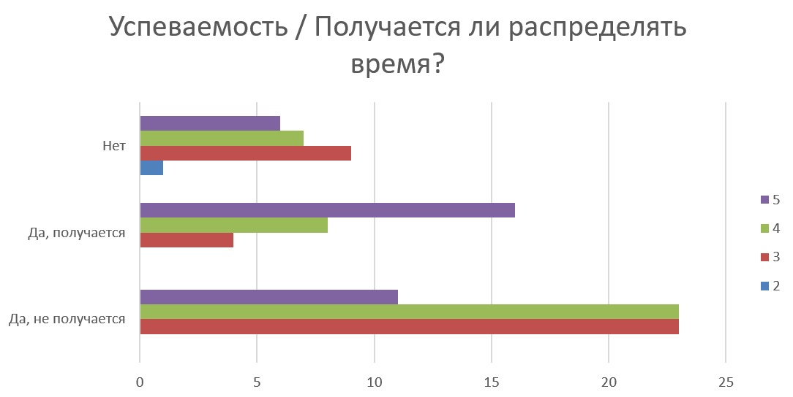
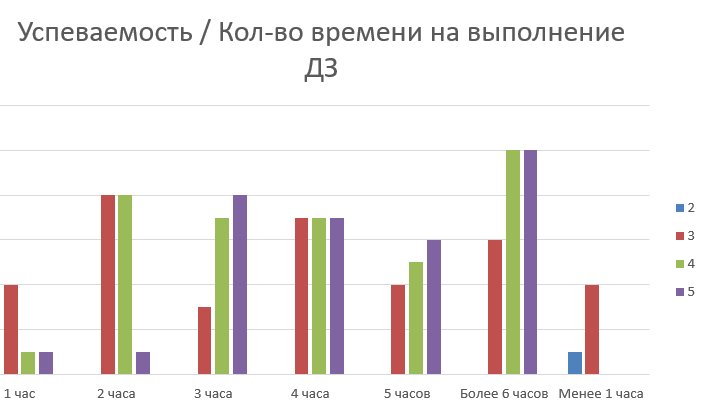
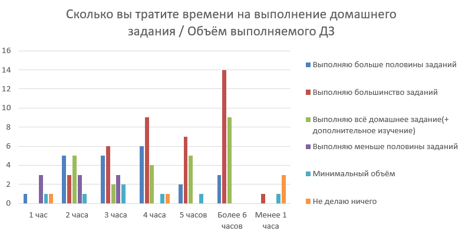
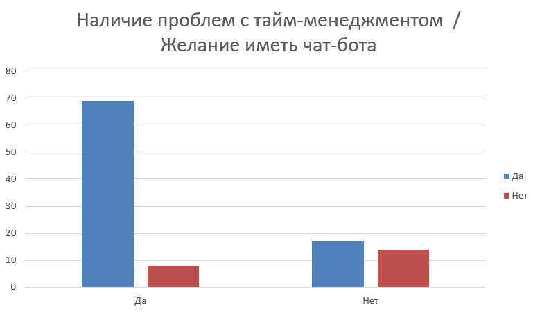

Гипотезы
Гипотезы
По диаграммам видно, что студенты, которые испытывают проблемы с планированием времени, учатся в основном на 3 и 4
Студенты, которые ответили «Да, получается» в основном получают отличные оценки, оценок «хорошо», значительно меньше, а «удовлетворительно» еще меньше.
Следовательно, можем сделать вывод: студенты, у которых получается распределять время. получают хорошие оценки, и если мы поможем тем людям, у которых это не получается, то у них повысится успеваемость.
Студенты, которые хорошо учатся, тратят большое кол-во времени на выполнение ДЗ, возможно они могли бы делать его быстрее и быть более продуктивными при его выполнении, если бы правильно планировали день.
Тут также подтверждается то, что студенты, которые выполняют все ДЗ, тратят на это значительное кол-во времени, а кто мало времени тратит, те выполнят не все ДЗ и, следовательно, не учатся на хорошие оценки.
Основная задача — это улучшить эти показатели благодаря более грамотному распределению времени, т.е. помочь людям, которые тратят много времени на выполнение ДЗ, работать продуктивнее и тратить меньше времени на выполнение ДЗ, а людям, которые тратят мало времени, и не все успевают, правильно рассчитывать время, чтобы все успевать и улучшить свою успеваемость.
Как видно про графику левая часть больше, это означает, что большее кол-во студентов имеет проблемы с тайм-менеджментом. А желание иметь чат бота преобладает в обоих случаях.
Подведем итог: в ходе аналитической деятельности было проведено несколько опросов, чтобы узнать мнение студентов, а также применена методика "5 вопросов почему?". По их результатам можно сделать вывод, что проблемы с успеваемостью у студентов связана с неправильным распределение времени (гипотеза ниже). На основе этого можно утверждать, что создание чат-бота для решения проблемы, связанной с тайм-менеджментом, будет актуальным, нужным и востребованным инструментом для студентов.
Основная гипотеза
Острый недостаток времени / проблема тайм-менеджмента (проблемы с тайм-менеджментом ведут к проблемам с понижением мотивации).
Причина: из-за неправильного распределения времени или его отсутствия студент не справляется с выполнением своих заданий.
Критерии проверки: создать опрос среди студентов. В опросе обязательно должны присутствовать следующие вопросы:
- Много ли у Вас времени на выполнение домашнего задания?
- Распределяете ли Вы время, чтобы выполнить домашнее задание наиболее эффективно, если да, то получается ли у Вас это?
- Хотели бы Вы иметь чат-бота, который будет делать для Вас персональное расписание на день?
Решение: реализация функционала, позволяющего составлять список дел, задавать для них «дедлайны» и получать уведомления об их приближении.